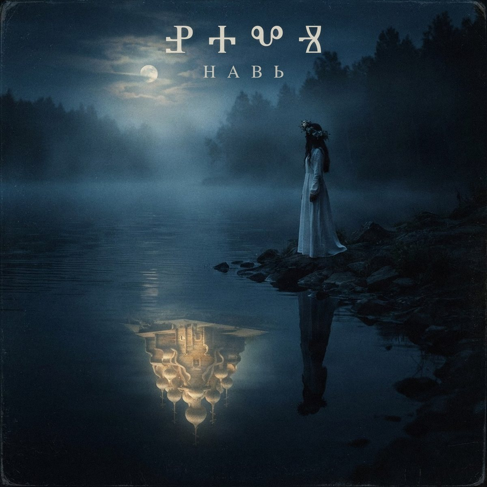

ⰐⰀⰂⰠ
Там, где кончается свет, начинается Навь.
Альбом LXKHN · славянский фонк и древние напевы · скоро

Об альбоме
Шесть треков, шесть легенд. Город, ушедший под воду. Венок на купальской воде. Голос из тёмной реки. Проводы зимы. День, когда предки приходят к живым.
Тяжёлый бас и тишина перед ударом, а над ними одинокий женский распев. Он звучит редко, поэтому каждое его появление запоминается.
В славянской традиции Навь — мир ушедших. Здесь это художественный образ, а не реконструкция древних верований.
Треклист
Зов из-за грани. Короткое вступление, через которое входишь в мир ушедших.
Город ушёл под воды озера Светлояр, чтобы не достаться врагу. В тихую ночь из-под воды до сих пор слышен звон.
Купальская ночь. Девушки пускают венки: поплыл — к счастью, утонул — к беде. В эту ночь граница миров тоньше всего.
Души девушек, ушедших в воду. В Русальную неделю они выходят на берег и зовут путников с собой.
Богиня зимы и смерти. Весной её чучело сжигают или топят, провожая зиму.
День поминовения. По поверьям, в этот день предки приходят к живым.
Номера треков записаны глаголическими цифрами: в старой азбуке буквы служили и числами, Ⰰ — один, Ⰱ — два, и дальше по порядку.